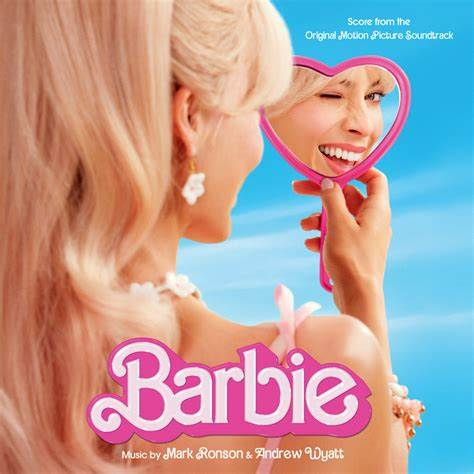
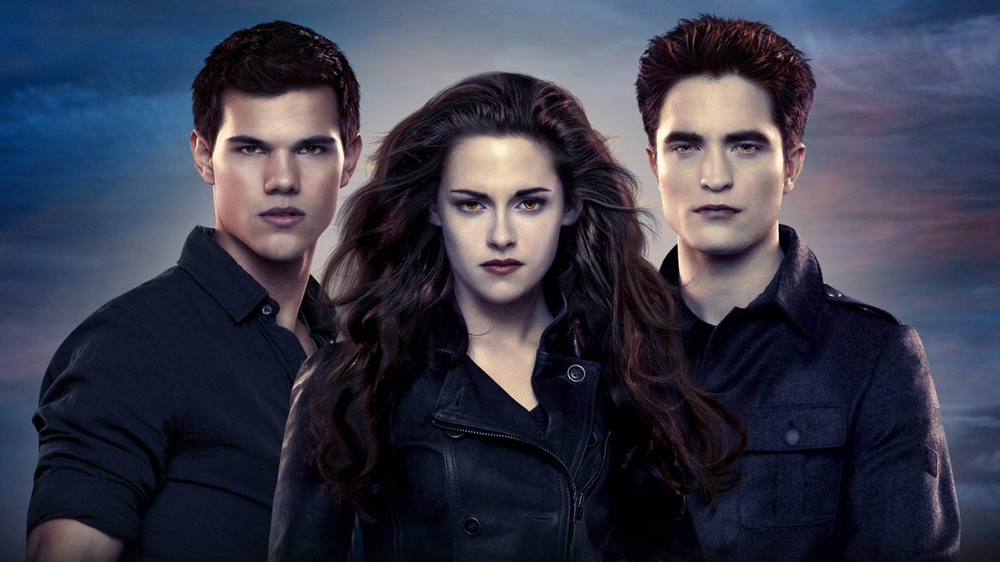
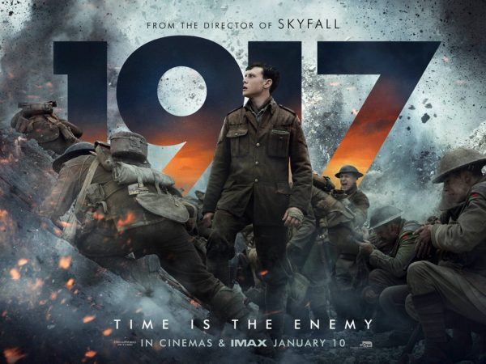

Fun movies you can Watch



Twilight:Breaking Dawn-Part 2
Genre
Adventure · Drama · Fantasy · Romance
Runtime
115 minutes
Rating
5.5/10 on IMDb &
49% on Rotten Tomatoes
Synopsis:
The final Twilight Saga begins with Bella now a vampire learning to use her abilities.
And happy to see her daughter, Renesmee is flourishing.
But when someone sees Renesmee do something that makes them think that she was turned.
This person goes to the Volturi, because it is a violation to turn a child.
And the penalty is death for both who turned the child into a vampire and the child,
cause they deem a turned child too dangerous.
Alice gets a vision of the Volturi coming after them. So the Cullens try to convince them that Renesmee is not a threat.
So they ask friends and family to come stand with them. But when someone who has it in for the Volturi shows up and tells them they should be ready for a fight.
And they get ready.
1917
Genre
Action · Drama · War
Runtime
119 minutes
Rating
8.2/10 on IMDb &
89% on Rotten Tomatoes
Synopsis
April 1917, the Western Front.
Two British soldiers are sent to deliver an urgent message to an isolated regiment.
If the message is not received in time the regiment will walk into a trap and be massacred.
To get to the regiment they will need to cross through enemy territory.
Time is of the essence and the journey will be fraught with danger.
Barbie
Genre
Adventure · Comedy · Fantasy
Runtime
114 minutes
Rating
6.9/10 on IMDb &
88% on Rotten Tomatoes
synopsis
Barbie and Ken are having the time of their lives in the colorful and seemingly perfect world of Barbie Land.
However, when they get a chance to go to the real world, they soon discover the joys and perils of living among humans.